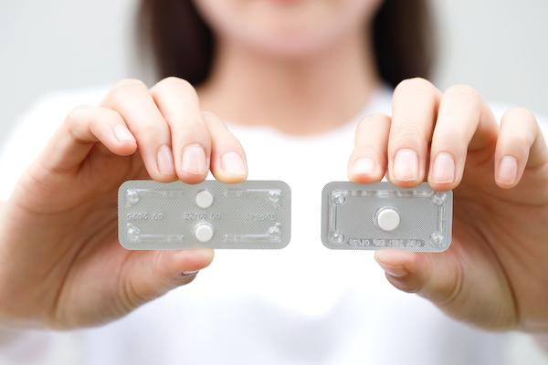
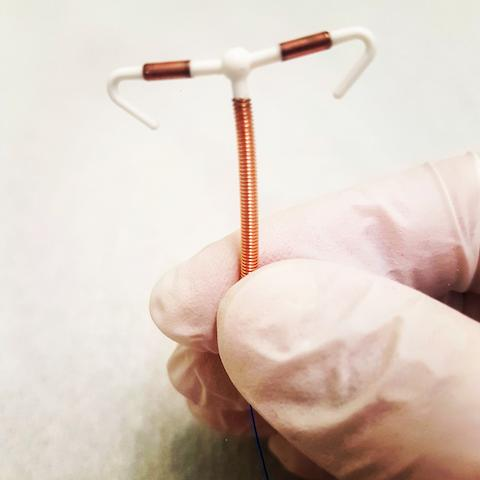

Emergency birth control, also called emergency contraception, is a safe way to help prevent pregnancy after you have unprotected sex. It is sometimes called the “morning-after pill” or “backup birth control.”
You might use it if:
Your birth control failed, like a broken condom.
You missed your regular birth control.
You did not use any birth control.
You were forced to have sex.
Emergency birth control does not cause an abortion and does not protect against sexually transmitted infections, or STIs. Emergency contraception is unlikely to prevent implantation of an already fertilized egg and does not cause harm to an already established pregnancy.
If you are feeling worried, scared, or upset, you are not alone. Many people need emergency birth control at some point. Your care team is here to support you and answer any questions you may have. It is OK to ask for help and to talk about your feelings.

There are a few options. Some work better than others, depending on how soon you use them and your weight. Here are the most common types:
This is the easiest type to get. Anyone can buy it over the counter at a drugstore or online. It is most effective if taken within 3 days of unprotected sex.
Brand names: Common brands include Plan B One-Step®, Take Action®, My Way®, Aftera®, Julie™, and others.
How it works: It delays the egg from leaving the ovary.
When to take it: It works best if you take it within 3 days, or 72 hours, after unprotected sex, but the sooner the better. You can take it up to 5 days, or 120 hours, after sex, but it will be less effective.
Where to get it: Anyone can get this at a pharmacy, online, some health departments, Planned Parenthood®, or other family planning clinics. No ID or prescription is needed for most brands.
Effectiveness: It lowers pregnancy risk by 75% to 89% if taken in the first 3 days. It may not work if you weigh more than 165 pounds.
Cost: Expect to pay $10 to $50, depending on the brand and location. Some clinics offer it for free or low cost. It may be free if you have health coverage and get a prescription.
Side effects: Common side effects include nausea, headache, tiredness, spotting, and an earlier or later period.
You need a prescription for this type. It should be taken within 5 days of unprotected sex.
Brand name: The brand name is Ella®.
How it works: It blocks hormones that help an egg leave the ovary.
When to take it: It should be taken within 5 days or 120 hours after sex.
Where to get it: You need a prescription to get it at a pharmacy, clinic, or online.
Effectiveness: It works better than levonorgestrel, especially on days 4 and 5. It lowers pregnancy risk by 85% if taken in the first 5 days. It may not work as well if you weigh 195 pounds or more.
Cost: Expect to pay $30 to $60. It may be free at a clinic or if you have health coverage.
Side effects: Common side effects include headache, upset stomach, and delayed period.
You need a provider to put this in within 5 days of unprotected sex.
What it is: This small, hormone-free device is placed in your uterus.
How it works: It stops sperm from reaching the egg.
When to use it: It should be placed within 5 days of unprotected sex.
Where to get it: It must be placed by your care team.
Effectiveness: It is the most effective emergency option. It lowers pregnancy risk by more than 99.9% if placed in the first 5 days.
Cost: It can be expensive if not covered by insurance, but many clinics offer help.
Side effects: Common side effects are cramping and heavier periods at first.

Wait for your next period: It may come early or late.
If your period is more than a week late: Take a pregnancy test.
Use birth control: Emergency contraceptive pills do not protect you after that one time. However, you can leave a copper IUD in place to provide birth control for up to 10 years.
Talk to your care team: Ask about the best regular birth control for you. Talk to your care team if you are worried about STIs.
Which emergency birth control is best for me?
Can I use this more than once?
What are my birth control options going forward?
Call your care team if:
You have heavy vaginal bleeding that soaks through 2 or more pads in an hour, or bleeding with strong belly pain.
You have ongoing spotting or irregular bleeding that does not stop after a few days.
You have a severe headache that does not get better with over-the-counter medicine.
You have severe nausea or vomiting, especially if you vomit within 2 hours of taking the pill. You may need another dose.
You have belly pain that is strong or does not go away.
You have no period within 3 weeks after taking the emergency contraceptive pill, or your period is more than 1 week late. Take a pregnancy test and contact your care team.
You have unusual vaginal discharge that smells bad, looks different, or is yellow or green after getting an IUD.
You have pain during sex or bleeding after sex, after getting an IUD.
You cannot feel the IUD strings, or you feel the plastic part of the IUD at the opening of your vagina.
You have any questions or concerns about your symptoms, the medicine, or the IUD.
Get help right away if:
You have sudden, severe belly pain with or without heavy bleeding. This could be a sign of a pregnancy outside the uterus, called ectopic pregnancy, which is life-threatening.
You have signs of a severe allergic reaction: trouble breathing, shortness of breath, or swelling of your face, lips, tongue, or throat.
You faint, feel like you might faint, or have severe dizziness.
You have confusion, trouble staying awake, or a sudden change in mental status.
You have severe hives, rash, or itching all over your body.
You have a fever higher than 103°F or 39.4°C that does not go down with medicine, or any fever with chills and feeling very sick.
You have heavy bleeding that will not stop, or you feel weak, lightheaded, or very tired, after getting an IUD.
Thank you for trusting us with your care. We are here to support you and want you to feel your best. Contact us with any questions.
IF YOU HAVE A MEDICAL EMERGENCY, CALL 911 OR GO TO THE EMERGENCY ROOM.
The information presented is intended for general information and educational purposes. It is not intended to replace the advice of your health care provider. Contact your health care provider if you believe you have a health problem.
Last updated May 2025
© 2025 Mytonomy, Inc. All rights reserved.